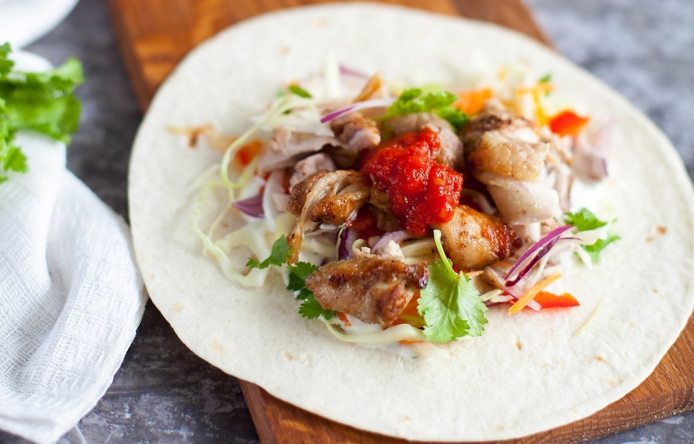

Шаурма (или, как говорят в Питере, шаверма) — сложно найти человека, который бы ее не любил. Тонкая лепешка, сочное мясо, овощной салат и пикантный соус. Из всех видов фастфуда этот, пожалуй, самый сбалансированный и полезный (конечно, если в нем нет майонеза непонятного происхождения, и все ингредиенты свежие).
Домашняя шаурма из фастфуда переходит в разряд полноценных блюд. С ней придется повозиться, но оно того стоит. К тому же куриные бедра и томатный соус можно приготовить заранее, тогда на следующий день останется только нарезать салат, смешать йогуртовый соус, пока греется мясо, а затем все это завернуть в лепешку.
Мы решили поделиться с вами рецептами двух соусов, но вполне можно обойтись только одним. Если решите делать только йогуртовый, добавьте к овощам один свежий помидор для сочности (нарежьте небольшими кубиками).
Если нет ступки, для измельчения сухих специй можно воспользоваться кофемолкой, но в этом случае увеличить количество специй в два раза, чтобы было легче перемалывать, и использовать только половину. Можно также взять покупные молотые специи, но они могут быть не такие ароматные. Лук и чеснок в этом случае нужно очень мелко порубить или взять сухие гранулированные.
Заворачивать шаурму можно в тортильи или тонкий лаваш, а можно подавать в пите. Можно оставить с открытым верхом (если используются тортильи) либо завернуть в рулет (если выбрали тонкий лаваш). Если вы собираетесь взять шаурму с собой, наиболее удобен вариант в пите — просто разложите по отдельным контейнерам мясо, салат и соусы, и положите разрезанные пополам питы отдельно.